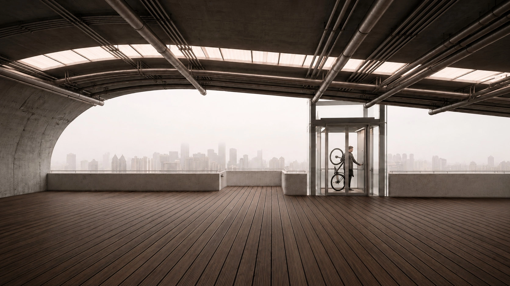
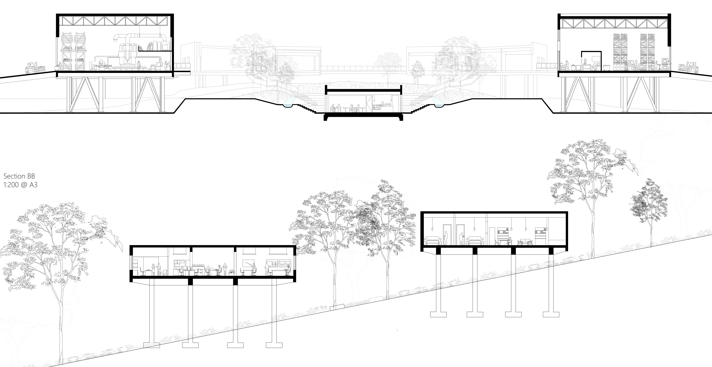

View projectA pedestrian crossing that brings public space and local energy infrastructure together.
SITE / SPACE / STRUCTURE / EXPERIENCEArchitecture student at UTS.
Exploring buildings, landscapes
and the systems that connect them.
Architecture, landscape
and construction.

View projectA pedestrian crossing that brings public space and local energy infrastructure together.
SITE / SPACE / STRUCTURE / EXPERIENCE
View projectAn institute for material reuse, research and public learning. Studio 4 work in progress.
CONCEPT / DEVELOPMENT / PROPOSAL / MATERIALSI’m a second-year architecture student at the University of Technology Sydney, with a background in landscape architecture and two years of hands-on construction experience.
I enjoy working between design ideas and the practical questions of how things are made. My interests span architectural drawing, 3D modelling and the relationship between buildings and their surroundings.
Outside architecture, I’m interested in technology, PC building and fitness. I’m looking for an opportunity to contribute to a studio, learn from practising architects and develop my skills alongside my studies.
Bachelor of Design in Architecture
UTS · 2025–present
Expected graduation: November 2027
One year of Landscape Architecture
UTS · 2024
Rhino · Revit · Adobe Illustrator
3D modelling · Architectural drawing
General labourer · HPIG Pty Ltd
2024–2026
Sydney, NSW · Available to discuss student roles.